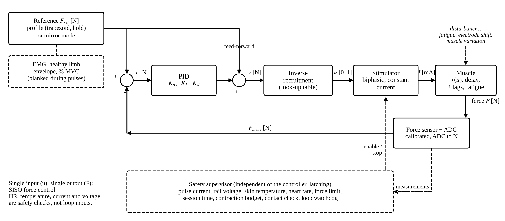
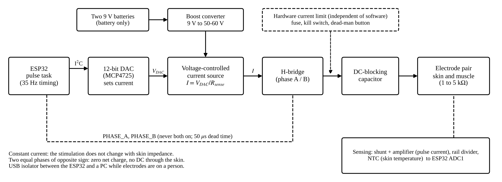
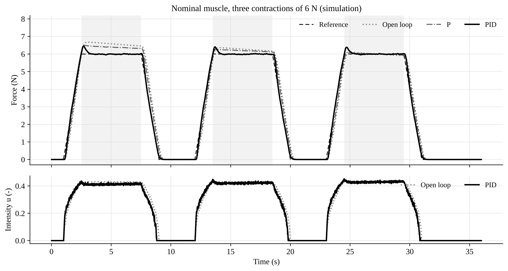
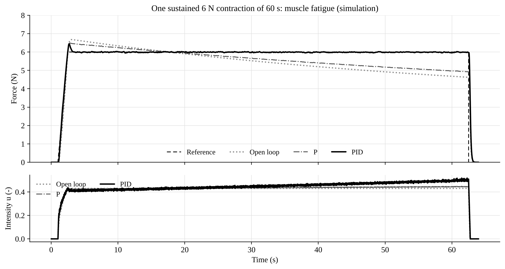

1. Objective
Hold the force of a stimulated muscle at a reference value, in newtons, while the muscle fatigues and its gain changes.
Structure: SISO. One input, the stimulation intensity u (0 to 1), and one output, the muscle force F (N). Heart rate, skin temperature, pulse current and rail voltage are safety checks, not loop inputs.
Mirror mode. The EMG of the healthy opposite limb, normalised to % of maximum voluntary contraction, sets the reference. EMG and force are different quantities and are linked only through this scale.
2. Plant model and controller
Hammerstein model: recruitment nonlinearity, dead time 40 ms, two lags (60 ms, 100 ms), fatigue.
F = Fmax · φ · x2, Fmax = 15 N, k = 9, u50 = 0.45
Controller, 100 Hz, in the force-demand domain:
v = Fref + Kp e + Ki∫e dt + D, u = Φ−1(v)
Φ−1 is the identified inverse recruitment table. It cancels the S-curve, so the PID sees a plant of gain about 1 N/N. Feed-forward of Fref, back-calculation anti-windup, derivative on the measurement, u slew limit 2 s−1.
Units: F, v [N]; u [–]; I [mA]; Kp [N/N]; Ki [s−1]; Kd [s]; RMSE [N]; IAE [N s].
3. Status and limitations
- Model parameters are assumed, typical of the literature. The recruitment table shipped in the firmware comes from the simulation, not from a person.
- Firmware: unit-tested on a PC, the C++ controller reproduces the Python one, the sketch compiles against stub headers. Not run on hardware.
- The high-voltage analogue stage is specified by function only, no verified schematic.
- No measurements on a person. Simulated and measured results are kept in separate folders.
- PID gives only a small error reduction over PI at about three times the control effort.
4. Control structure

5. Stimulation stage

6. Identification and tuning
- Staircase (open loop, ascending u): plateau forces give the recruitment curve, stored as a look-up table in the firmware.
- Step of force demand 3 → 6 N: fit K e−θs / ((τ1s+1)(τ2s+1)).
- SIMC rules with τc = effective dead time.
| Simulated identification | Value |
|---|---|
| K | 1.11 N/N |
| τ1, τ2 | 0.074 s, 0.074 s |
| θ (dead time) | 0.056 s |
| fit R2 | 0.997 |
| PI: Kp, Ki | 0.54, 4.80 s−1 |
| PID: Kp, Ki, Kd | 0.89, 6.0 s−1, 0.033 s |
Force sensor: calibrated against known masses, 16-point table, leave-one-out error reported.
7. Next steps
- Build and verify the stimulator on a dummy load.
- Calibrate the force sensor, report its leave-one-out error.
- Measure the recruitment curve and step response, retune.
- Closed-loop trials with supervision, then mirror mode.
8. Simulation: tracking (simulated)

9. Simulation: fatigue (simulated)

10. Results (5 noise seeds, simulated)
| RMSE (N) | OL | P | PI | PID |
|---|---|---|---|---|
| Nominal | 0.45 | 0.30 | 0.13 | 0.12 |
| Gain × 0.7 | 1.18 | 0.91 | 0.24 | 0.21 |
| Gain × 1.3 | 1.61 | 1.02 | 0.17 | 0.14 |
| Fatigue: end / start | 72 % | 79 % | 99.9 % | 99.9 % |
Inverse recruitment cuts PI error 2.3 to 3 times at 3, 6 and 9 N. PID gains little over PI and moves u about 3 times more.
11. Safety supervisor
Latching faults: pulse current > 35 mA, rail > 70 V, skin > 40 °C or +4 °C, heart rate outside 40 to 150 min−1, force > 10 N, session > 300 s, 15 s continuous budget, no current measured, loop late > 50 ms. Dead-man button, kill switch, hardware current limit.
| Stimulation parameter | Value |
|---|---|
| Waveform | biphasic, symmetric |
| Rate | 35 Hz |
| Phase width, gap | 300 μs, 50 μs |
| Current at u = 1 | 30 mA (limit 35 mA) |
| Duty cycle | about 2 % |